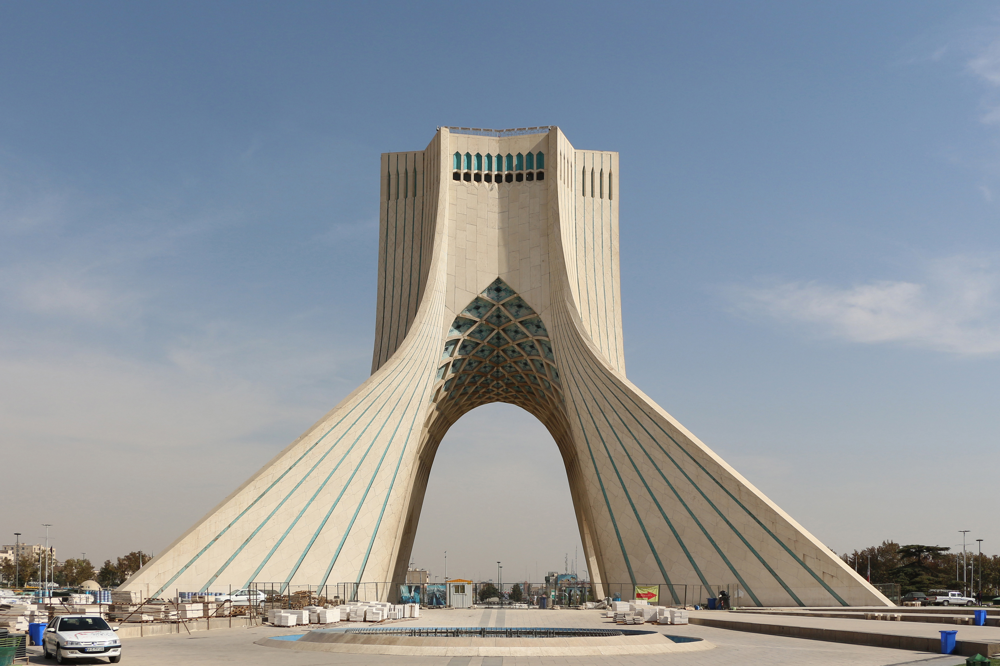

Oʻzbekiston va Eron diplomatik munosabatlari (1991-1996): ilk aloqalarning oʻrnatilishi
Eron mustaqil Oʻzbekistonni tan olgan birinchi davlatlardan biri boʻlgan: tan olish 1991-yil dekabrida, diplomatik munosabatlar esa rasman 1992-yil 10-mayda (Ashxobodda imzolangan protokol bilan) oʻrnatilgan. Dastlabki yillar savdo, tranzit va umumiy forsiyzabon madaniy meros atrofida kechdi; ayni paytda Toshkent dunyoviy davlat sifatida ehtiyotkor siyosat yuritdi. Faqat faktlarga asoslangan tarix; ayrim kun-sanalar taxminiy.

Mustaqillikdan soʻng Oʻzbekiston qoʻshni va yirik davlatlar bilan diplomatik aloqalar oʻrnata boshladi. Shular orasida Eron ham bor edi. Quyida Oʻzbekiston va Eron oʻrtasidagi munosabatlarning 1991-1996-yillardagi ilk bosqichi — tan olish, diplomatik aloqalarning oʻrnatilishi, elchixonalar va dastlabki hamkorlik yoʻnalishlari faqat faktlar asosida bayon etiladi.
Tan olish va diplomatik munosabatlarning oʻrnatilishi
Oʻzbekiston 1991-yil 31-avgustda mustaqillikni eʼlon qildi. Eron mamlakatni 1991-yil dekabrida tan olgan birinchi davlatlardan biri boʻldi (aniq kun manbalarda turlicha keltirilgani uchun bu yerda faqat oy koʻrsatiladi). Ikki davlat oʻrtasida diplomatik munosabatlar rasman 1992-yil 10-mayda — Ashxobodda imzolangan protokol asosida — oʻrnatildi; bu sana Oʻzbekiston Tashqi ishlar vazirligining rasmiy roʻyxatida ham qayd etilgan.
Elchixonalar va ilk uchrashuvlar
Eronning Toshkentdagi elchixonasi 1992-yil noyabrida ochildi; Oʻzbekistonning Tehrondagi elchixonasi esa 1995-yil mayida ish boshladi. Prezident Islom Karimov Eronga birinchi tashrifini 1992-yilda amalga oshirdi (ayrim manbalarga koʻra noyabr oyida). Eron prezidenti Akbar Hoshimiy Rafsanjoniy 1993-yil oktabrida Markaziy Osiyo safari doirasida Oʻzbekistonga tashrif buyurdi.

ECO va tranzit konteksti
1992-yil 28-noyabrda Oʻzbekiston Iqtisodiy Hamkorlik Tashkilotiga (ECO) aʼzo boʻldi; ECO Eron, Pokiston va Turkiya tomonidan asos solingan tashkilot edi (bu haqda alohida maqolamiz bor). Eron dengizga chiqish imkoni boʻlmagan Oʻzbekiston uchun janubga — Fors koʻrfaziga — potensial tranzit yoʻli sifatida muhim edi. 1996-yil 13-mayda ochilgan Tajan-Saraxs-Mashhad temir yoʻli Markaziy Osiyo (Turkmaniston) tarmogʻini Eron bilan bogʻladi; bu — Turkmaniston-Eron yoʻnalishidagi liniya boʻlib, Oʻzbekistonga bilvosita, tranzit orqali foyda berardi.
Hamkorlikning dastlabki yoʻnalishlari
Dastlabki hamkorlik savdo, transport-tranzit, hamda ilmiy-madaniy sohalarga qaratilgan edi va umumiy forsiyzabon meros (Samarqand, Buxoro, tojik/fors tilidagi aloqalar) unga tabiiy asos boʻlib xizmat qildi. Mustaqillikdan keyingi dastlabki yillarda hukumatlararo memorandum va qoʻshma komissiya protokollari imzolangan; manbalarga koʻra, 1992-2002-yillarda oʻttizdan ortiq hamkorlik hujjati qabul qilingan.
Toshkentning ehtiyotkor dunyoviy siyosati
Karimov hukumati dunyoviy davlat maqomini saqlab, Eron Islom Respublikasiga va umuman siyosiy Islomga ehtiyotkorlik bilan munosabatda boʻldi. Ikki davlatning siyosiy tuzilishi — dunyoviy prezidentlik respublikasi va diniy respublika — farqli boʻlgani sabab, rasmiy aloqalar erta oʻrnatilgan boʻlsa-da, 1990-yillar davomida munosabatlar ancha jadal rivojlanmadi.
Keyingi davr
1991-1996-yillarda qoʻyilgan diplomatik poydevor keyinchalik ham saqlanib qoldi; munosabatlar, ayniqsa 2016-yildan — Prezident Shavkat Mirziyoyev davrida — sezilarli jonlandi. Biroq bu ushbu maqolaning asosiy davri (1991-1996) doirasidan tashqarida.
Nega bu muhim
Oʻzbekiston-Eron aloqalarining ilk yillari mustaqil davlatning tashqi siyosatdagi amaliy yondashuvini koʻrsatadi: qoʻshnilar va madaniy jihatdan yaqin davlatlar bilan aloqa oʻrnatish, ayni paytda dunyoviy davlat tamoyillarini saqlash. Dengizga chiqish yoʻli masalasi va forsiyzabon madaniy meros — bu munosabatlarni bugun ham shakllantiruvchi omillardir.

Manbalar
- Oʻzbekiston TIV — Diplomatic Relations of Uzbekistan (Iran: 10.05.1992, protocol signed in Ashgabat)
- Wikipedia — Foreign relations of Uzbekistan (diplomatic relations with Iran 10 May 1992)
- MEPEI — Iran-Uzbekistan relations: opportunities, challenges and prospects (recognition Dec 1991; May 1992; secular/cautious stance)
- Tehran Times — Uzbekistan-Iran relations: historical ties and modern cooperation (embassies: Tashkent Nov 1992, Tehran May 1995; Karimov first visit)
- Wikipedia — Economic Cooperation Organization (Uzbekistan joined 28 Nov 1992; founded by Iran, Pakistan, Turkey)
- UPI Archives — Iran-Turkmenistan railway (Tejen-Sarakhs-Mashhad) launched 13 May 1996